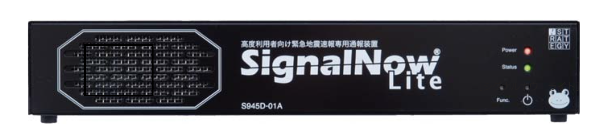

OUR BUSINESS
防災事業
関西・関東を中心に、防災設備品全般の販売及び緊急地震速報システムの導入・サポート、防災マニュアルの作成・提案をしています。
気象庁の緊急地震速報情報提供開始後、
幼稚園、学校、病院、オフィス、工場、物流センター等、
大手企業様を主として、６００件以上の緊急地震速報システムの導入及びサポート。
デザイン事業
愛犬や猫など多数の生き物をキャラクター化したデザインなどを販売しています。多数の実績を持つ弊社のイラストレーターが担当させていただきます。
防災事業
弊社は平成１９年１０月１日から開始されました緊急地震速報システムのサポートを提供しています。緊急地震速報は気象庁から気象業務支援センターを通じ、各社配信センターのサーバーを経由し、
設置された受信装置の場所に影響する地震がどれくらいの規模（震度）で、後何秒後に来るかを予報として、通報致します。
緊急地震速報受信装置で通報されます緊急地震速報は、減災目的とし、お客様の放送設備にて、一斉放送をされる必要があります。
緊急地震速報システムは、過去に発生しました大きな地震にも、大変活躍しております。是非この機会に、導入をご検討ください。
導入先業種
自動車工場・エアコン工場・商社・物流センター・鉄道車輛工場・半導体工場・塗料メーカー・太陽光パネルメーカー,
食品会社・研究所・家電製造工場・
鉄鋼会社・書籍販売倉庫・自治体・幼稚園・小中学校・病院、他多数
※設置先様名は、お客様のインフラセキュリティに関係するため、掲載しておりません。

詳細へ
デザイン事業
インスタグラムでも人気の弊社のクリエイターがお客様の愛犬や猫をキャラクターします。
イラストは動物以外でもOKです！！お気軽にご相談ください。
詳細へ
ABOUT US
会社名 有限会社 弘 陽
代表取締役 田中 広恭
所在地
大阪市淀川区東三国2丁目28-20
TEL. 06-7181-6867 (平日9:00～18:00)
創業年月 平成6年5月
設立年月 平成7年5月
資本金 3,000,000円
主な事業内容
防災設備品全般の販売・設置
緊急地震速報受信装置の販売及びシステム管理
幼稚園、保育園を専門とした地震専門防災コンサルタント
届出・登録
電気通信事業者
緊急地震速報利用者協議会会員